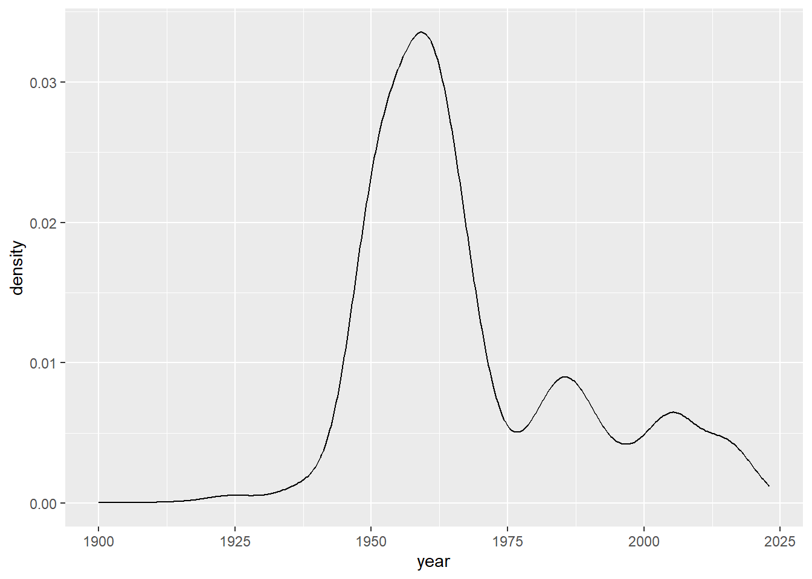

###Web scarping
In this example, I scarped from the University of Edinburgh Museum of Art website. I pulled information about their art pieces from over 90 pages of information. At the end, I included a very simple visualization for the age of the collection.
This exercise is derived from a exercise I did in lab 08 in Data Science for Psychologists.
library(tidyverse)
library(tibble)
library(skimr)
library(rvest)first_url <- "https://collections.ed.ac.uk/art/search/*:*/Collection:%22edinburgh+college+of+art%7C%7C%7CEdinburgh+College+of+Art%22?offset=0"
page <- read_html(first_url)
titles <- page %>%
html_nodes(".iteminfo") %>%
html_node("h3 a") %>%
html_text() %>%
str_squish()#Make a quick trial to make sure the code works
Links <- page %>%
html_nodes(".iteminfo") %>% # same nodes
html_node("h3 a") %>% # as before
html_attr("href") %>%
str_replace("./","https://collections.ed.ac.uk/art/")Artists_names <- page %>%
html_nodes(".artist") %>%
html_text() %>%
str_squish()#everything <- tibble(Artists_names= Artists_names,titles = titles, links = Links)
max_length <- max(length(Artists_names), length(titles), length(Links))
Artists_names <- c(Artists_names, rep(NA, max_length - length(Artists_names)))
titles <- c(titles, rep(NA, max_length - length(titles)))
Links <- c(Links, rep(NA, max_length - length(Links)))
everything <- tibble("Artists_names"= Artists_names,"titles" = titles, "links" = Links)#function setup
scrape_page <- function(x){
y <- read_html(x)
#titles
titles <- y %>%
html_nodes(".iteminfo") %>%
html_node("h3 a") %>%
html_text() %>%
str_squish()
#Links
Links <- y %>%
html_nodes(".iteminfo") %>%
html_node("h3 a") %>%
html_attr("href") %>%
str_replace("./","https://collections.ed.ac.uk/art/")
#Artists_names
Artists_names <- y %>%
html_nodes(".artist") %>%
html_text() %>%
str_squish()
#combine
max_length <- max(length(Artists_names), length(titles), length(Links))
Artists_names <- c(Artists_names, rep(NA, max_length - length(Artists_names)))
titles <- c(titles, rep(NA, max_length - length(titles)))
Links <- c(Links, rep(NA, max_length - length(Links)))
df <- tibble("Artists_names"= Artists_names,"titles" = titles, "links" = Links)
return(df)
}
scrape_page(first_url)## # A tibble: 10 × 3
## Artists_names titles links
## <chr> <chr> <chr>
## 1 Robert Marx The Strike (1953) http…
## 2 Eduardo Luigi Paolozzi KBE, RA Riders from South Frieze of the Parthen… http…
## 3 Boris Bućan Central Park in the Dark Some 40 Years … http…
## 4 A. Parkinson William Shakespeare Otelo (1983) http…
## 5 Alexander F Mitchell Untitled http…
## 6 Edith Duke Striding Male Nude (1950) http…
## 7 Violet Thompson Portrait of a Woman (1955) http…
## 8 Mary Edward Seated Male Nude (1959) http…
## 9 Unknown Portrait of a Woman (1953) http…
## 10 <NA> Agriculture http…rm(page,titles,Links,Artists_names)#iterative scraping
URL_list <- list("URL"=
paste("https://collections.ed.ac.uk/art/search/*:*/Collection:%22edinburgh+college+of+art%7C%7C%7CEdinburgh+College+of+Art%22?offset=",
seq(0,2900,by = 10),
sep = ""
)
)
URL_list <- unlist(URL_list)
# Let's scrape!
uoe_art<-map_dfr(URL_list,scrape_page)#save it here so that I don’t need to run it again
write.csv(uoe_art, "Data/uoe_art.csv")#prepare data and seperate date
uoe_art <- read_csv("Data/uoe_art.csv")## New names:
## Rows: 2918 Columns: 4
## ── Column specification
## ────────────────────── Delimiter: "," chr
## (3): Artists_names, titles, links dbl (1):
## ...1
## ℹ Use `spec()` to retrieve the full column
## specification for this data. ℹ Specify the
## column types or set `show_col_types = FALSE`
## to quiet this message.
## • `` -> `...1`uoe_art <- uoe_art %>%
separate(titles, into = c("titles", "date"), sep = "\\(") %>%
mutate(year = str_remove(date, "\\)") %>% as.numeric()) %>%
select(c(Artists_names,titles,links,year))#Quick skim
skim(uoe_art)| Name | uoe_art |
| Number of rows | 2918 |
| Number of columns | 4 |
| _______________________ | |
| Column type frequency: | |
| character | 3 |
| numeric | 1 |
| ________________________ | |
| Group variables | None |
Variable type: character
| skim_variable | n_missing | complete_rate | min | max | empty | n_unique | whitespace |
|---|---|---|---|---|---|---|---|
| Artists_names | 114 | 0.96 | 2 | 55 | 0 | 1094 | 0 |
| titles | 9 | 1.00 | 0 | 95 | 8 | 1341 | 0 |
| links | 8 | 1.00 | 57 | 60 | 0 | 2910 | 0 |
Variable type: numeric
| skim_variable | n_missing | complete_rate | mean | sd | p0 | p25 | p50 | p75 | p100 | hist |
|---|---|---|---|---|---|---|---|---|---|---|
| year | 1389 | 0.52 | 1964.42 | 56.29 | 2 | 1953 | 1962 | 1980 | 2022 | ▁▁▁▁▇ |
uoe_art %>%
select(year)%>%
summary## year
## Min. : 2
## 1st Qu.:1953
## Median :1962
## Mean :1964
## 3rd Qu.:1980
## Max. :2022
## NA's :1389#simple visualization
uoe_art %>%
ggplot(aes(x=year))+
geom_density()+
xlim(1900,2023)
#there is a piece that came from year 2 which is not included in the graph.